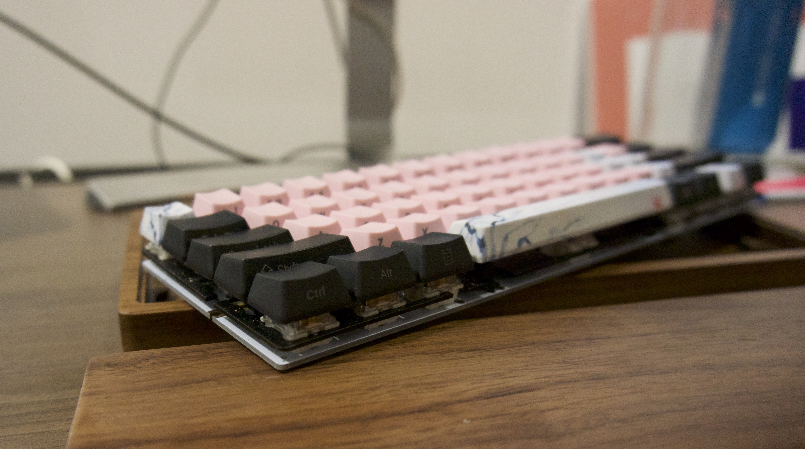
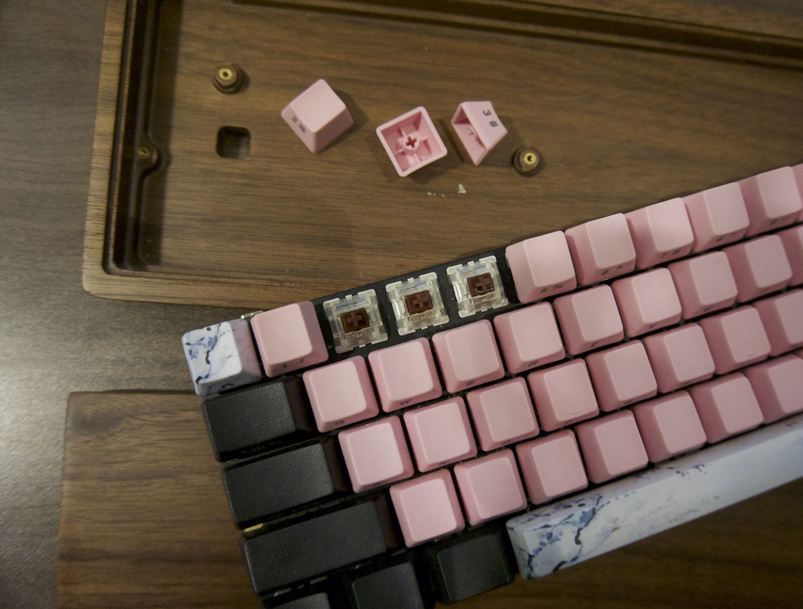

KETIK: A custom mechanical keyboard
Ketik is an initiative I've been working on to build a beautiful keyboard that allows for the full customization of key switches, caps, layout and angle.
The keyboard you see in the photo is my very first prototype and the very keyboard I'm still using in my day to day. Keyboards are a dangerously addictive hobby. Once you know the basics of building one, you will see that the possibilities are pretty much endless for customizing your keyboard. For example, take a look at some ideas: here, aren't they fun?
I've promised a tutorial to many for too long - and even though a proper tutorial is still on the way - I finally got myself to at least share some basic nits and bits on getting things started. Besides my short walk through, also check out this tutorial.
First off, here are two suppliers that I found to be reliable and reasonably priced:
https://kbdfans.cn/
https://www.aliexpress.com/store/429151
They will have all the parts you need. The quality is perfectly fine for the price, sellers are helpful, but shipping, as most things from AliEpress, takes a long time.

Let's see the core components of a 60% keyboard. First you will need a Satan GH60 60% pcb. This comes pre-soldered with the necessary diodes, resisters, controllers, meaning
other than soldering your switches to the board, no soldering is needed.
The GH60 is fully programmable and it supports LEDs and breathing LED effects. It also comes with pre-loaded firmware.
You will also need 5 stabilizers (4x2unit, 1x6.2unit for the space bar - ideally original cherries) and a mounting plate. First you will pop in the stabilizes, this should hold the plate in place.
The GH60 is fully programmable and it supports LEDs and breathing LED effects. It also comes with pre-loaded firmware.
You will also need 5 stabilizers (4x2unit, 1x6.2unit for the space bar - ideally original cherries) and a mounting plate. First you will pop in the stabilizes, this should hold the plate in place.

Next, we need 61 switches for the 60% layout. I suggest getting a few more just in case some get damaged during shipping.
I used Gateron Brown switches, a lighter version of the Cherry Browns, but your choice here depends on your personal preference.
This website gives a useful breakdown on the differences between switches.
Next we can pop in the switches and solder them one by one. See more details on soldering on the tutorial I posted above. A useful trick when soldering is to use a ruler to ensure your switches are aligned.
The last step then is to just put the keycaps on the switches, and place the board into a case. You can find a great variety of cases on AliExpress. Mine is from one of the linked suppliers, but really, you could also just mill your own with a CNC machine, or 3D print one.
This website gives a useful breakdown on the differences between switches.
Next we can pop in the switches and solder them one by one. See more details on soldering on the tutorial I posted above. A useful trick when soldering is to use a ruler to ensure your switches are aligned.
The last step then is to just put the keycaps on the switches, and place the board into a case. You can find a great variety of cases on AliExpress. Mine is from one of the linked suppliers, but really, you could also just mill your own with a CNC machine, or 3D print one.
The last step is to plug in your pcb to your computer using a USB cable.
You won't be able to customize your keyboard before flashing your device. This will
install the firmware on your device. To do this I
suggest using
Next, we can now put the keyboard into bootloader mode by pressing the reset button and run the following commands:
With that, you should be ready to go! Congratulations on your DIY mechanical keyboard!
dfu-programmer, this will work well with GH60's atmega32u4 chip.
First, we install dfu-programmer:
apt-get install dfu-programmer
Next, we can now put the keyboard into bootloader mode by pressing the reset button and run the following commands:
dfu-programmer atmega32u4 erase --force
dfu-programmer atmega32u4 flash your_firmare.hex
dfu-programmer atmega32u4 reset
If you don't have your .hex file, QMK toolbox should provide a nice GUI to
go through this process and to customize your keys: https://github.com/qmk/qmk_firmware/blob/master/docs/flashing.md
With that, you should be ready to go! Congratulations on your DIY mechanical keyboard!